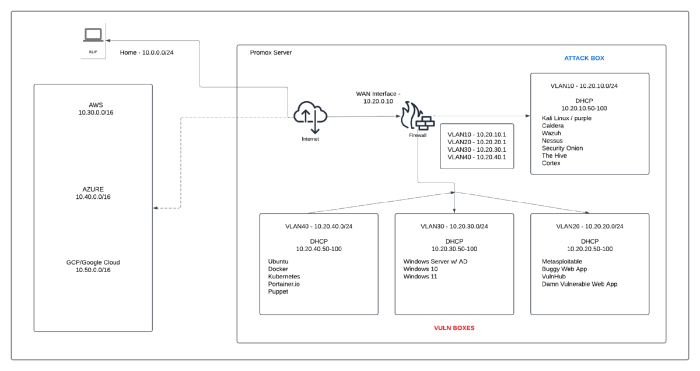

My Virtual Home Lab
My Virtual Home Lab
Keith Brady 1/12/25

Goal
I built a home cybersecurity lab to provide myself an invaluable hands-on learning environment to practice offensive and defensive security skills in a controlled setting. The hardware is a mini pc with an Intel i5 CPU, 32GB RAM, 120GB SSD, fine for virtuallization. By leveraging Proxmox, I was able to create isolated virtual machines (VMs) for experimentation without breaking the bank or using up too many resources running multiple VMs on my primary machine. Proxmox’s efficient resource allocation and snapshot features allow me to deploy and reset VMs/environments easily, making it ideal for simulating cyberattacks, testing detection mechanisms, and recovering from simulated incidents. This setup also helps me practice system hardening and improve your proficiency in managing virtualized infrastructures, similar to real-world cloud or on-premises environments.
Key Applications and Their Use Cases
To sharpen my offensive security skills, I use tools like Kali Linux and Metasploitable (and others) for penetration testing and vulnerability exploitation. VulnHub, Damn Vulnerable Web App (DVWA), and Buggy Web App provide deliberately vulnerable systems for practicing web application attacks, such as SQL injection, cross-site scripting (XSS), and privilege escalation. These resources help me in building expertise in identifying weaknesses in applications and systems.
On the defensive side, I use Wazuh, Security Onion, and Nessus for threat detection and vulnerability management. Wazuh acts as a SIEM (Security Information and Event Management) platform for log analysis and alerting, while Security Onion provides an integrated environment for network traffic analysis and intrusion detection. Nessus complements this by performing in-depth vulnerability scans, helping me understand security flaws and how to prioritize mitigation efforts.
Advancing Incident Response and Threat Hunting Skills
To help me develop better threat intelligence and incident response skills, I use tools like TheHive and Cortex. TheHive serves as a collaborative incident response platform, allowing you to organize investigation workflows and document findings. Cortex enhances incident response by automating enrichment processes, such as gathering threat intelligence from external sources. Additionally, CALDERA, an adversary emulation platform, enables you to simulate advanced persistent threats (APTs) and assess your ability to detect and respond to sophisticated attack scenarios. By combining these tools, you can practice conducting threat hunts, creating correlation rules, and refining response strategies. Ultimately, this lab will serve as a comprehensive environment where you can build and reinforce cybersecurity expertise across offensive, defensive, and investigative domains.
Notes About Setup
- I have a Pfsense firewall running in a VM to manage the DHCP, CIDR, NAT translation, tunneling, VLANs, etc. The Promox device is connecting to my primary home network but is isolated and nothing is granted outside access unless it is manually turned on for updates or specifc scenarios.
- The machine is not very powerful so I have to ramp up specific VMs or services/platforms based on the scenario I am running.
- I primarily use Puppet to maintain instances.
- This setup is never final and will be changed, modified, upgraded to further develop my skills by using different VMs, platform, services, configurations.
- Its also free! :)
VM/Network Overview

Current Setup
Pentest VMs/SIEMs/Vuln Scanners/Network Monitoring/Etc.
- Kali Linux
- Kali Purple (for testing)
- Caldera (MITRE)
- Wazuh
- Nessus
- Security Onion
- TheHive
- Cortex XDR
Vuln Boxes/Standard OSes (and modified instances)/Services/Platforms
- Metasploitable
- Buggy Web App
- VulnHub
- Damn Vulnerable Web App
- Windows Server 2019 w/ AD
- Windows 11
- Windows 10
- Ubuntu
- Docker
- Kubernetes (K8s)
- Portainer.io
- Puppet
Future VMs/Platforms/Services (for now...)
- Physuical network expansion for aditional machines
- IoT
- Splunk
- Bunker
- Snort
- RF tools (SDR, Frequency Analysis, BLE attacks, Wifi, Etc).
- ...
© phrohike.github.io. All rights reserved.